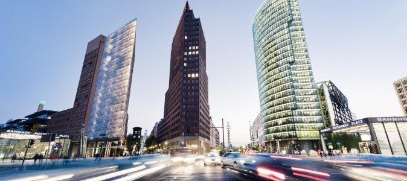
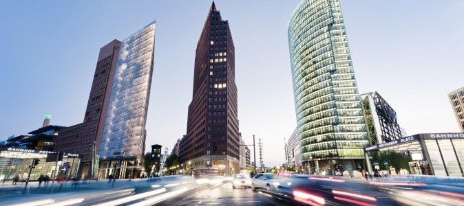

Ką mes aplankysime?
Reichstagas. Reichstago pastate nuo 1999 metų vėl dirba Vokietijos parlamentas - Bundestagas.
Kas buvo iki tol, žinome, tad belieka apsilankyti ir įsitikinti savo akimis, kaip puikiai dera sena ir nauja.
Brandenburgo vartai. Pirma draugės replika: „na visai vaizduotės neturi, tokie pat, kaip Briuselyje“. Vaizdas daug kartų matytas istorijos vadovėliuose, atvirutėse, bet vieta įdomi.
Aikštėje už vartų galėsite nusifotografuoti su kariais, už 2 eurus jums uždės senovinius antspaudus ant atvirutės (duoda vietoje), papasakos, kam buvo skirtas kiekvienas antspaudas. Čia pat atliekami įvairūs gatvės „performancai“, fotografuojasi turistai.
Šarlotenburgo rūmai. Labiausiai sužavėjo jų sodai, o nustebino prie pat rūmų esantis pastatas, kuris visiškai „iškrito iš konteksto“ ir priminė pietietiškos architektūros pavyzdį.
Palmių pamatyti tikrai nesitikėjom. Parko pabaigoje yra ežeras, kuriame jūsų duonos gabaliuko lauks kelios gulbės ir antytės. Beje, pačiuose rūmuose yra įdomių ekspozicijų, o soduose yra karalienės Luizės mauzoliejus.
Potsdamo aikštė. Ieškojome tiesiog gražios aikštės, o radom tikrą „dirbtinę realybę“. Ėjome, netyčia pamatėme steriliai susodintus medžius vazonuose, vidutinio aukščio dangoraižių apsuptyje.
Nusprendėme kyštelėti nosį ir visiškai atsitiktinai patekome į Potsdamo aikštę. Virš mūsų pakibo įspūdingo dydžio kupolas, prieš akis fontanas, šonuose, prie minėtų „dangoraižių“ prisiglaudusios kavinės, restoranėliai, daugybė žmonių. Potsdamo aikštė – dirbtina, sterilu, šiuolaikiška, erdvu ir kažkur „ne čia“. Būtina pamatyti.
Beje, vėlai vakare kupolas keičia spalvas – įdomus vaizdas.
 
Grįžti atgal

Grįžti atgal